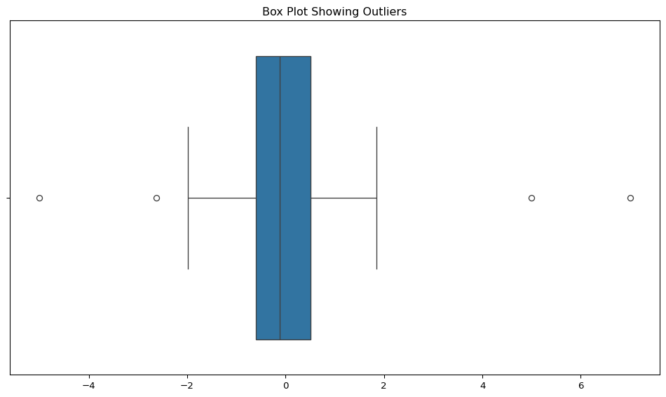
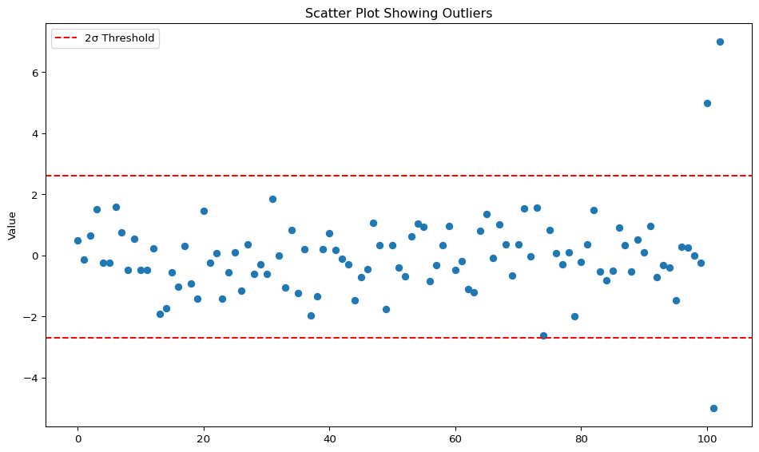
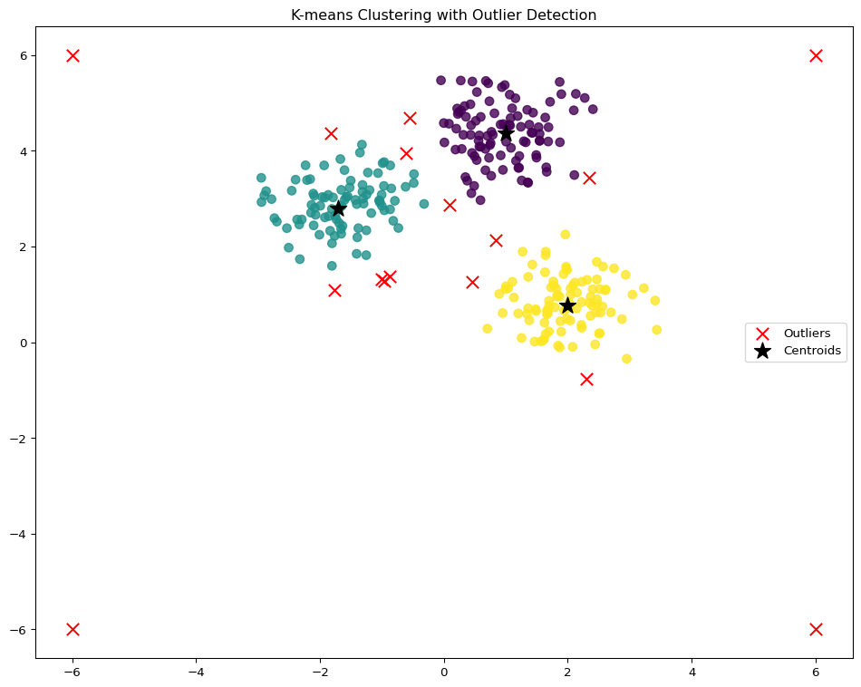

Outlier detection is a fundamental aspect of data analysis, helping to identify data points that significantly deviate from the overall pattern. These anomalies can indicate errors, rare events, or interesting insights that merit further investigation.
Why Outlier Detection Matters
Outliers can significantly impact statistical analyses, model performance, and business decisions. Detecting them is crucial for:
Data cleaning and preprocessing
Fraud detection
Network intrusion detection
Medical diagnosis (detecting abnormal test results)
Manufacturing quality control
9.1 Graphical Outlier Detection
One of the simplest ways to detect outliers is through visualization. By plotting the data, human intuition can be leveraged to identify unusual points. Common graphical methods include:
Boxplots: Provide a summary of the data distribution, highlighting potential outliers
Scatterplots: Useful for detecting complex patterns in two-variable datasets
Histograms: Help identify values that fall outside the typical distribution
import numpy as npimport matplotlib.pyplot as pltimport seaborn as snsimport pandas as pd# Generate sample data with outliersnp.random.seed(42)data = np.random.normal(0, 1, 100)data = np.append(data, [5, -5, 7]) # Add outliers# Create a box plotplt.figure(figsize=(10, 6))sns.boxplot(x=data)plt.title('Box Plot Showing Outliers')plt.tight_layout()plt.show()# Create a scatter plotplt.figure(figsize=(10, 6))plt.scatter(range(len(data)), data)plt.title('Scatter Plot Showing Outliers')plt.ylabel('Value')plt.axhline(y=np.mean(data) +2*np.std(data), color='r', linestyle='--', label='2σ Threshold')plt.axhline(y=np.mean(data) -2*np.std(data), color='r', linestyle='--')plt.legend()plt.tight_layout()plt.show()


9.1.1 Quartiles and the Boxplot Method
A boxplot divides data into quartiles, summarizing five key statistics:
Minimum: The smallest value excluding outliers
First quartile (Q1): The median of the lower half (25% of data below Q1)
Median: The middle value of the dataset
Third quartile (Q3): The median of the upper half (75% of data below Q3)
Maximum: The largest value excluding outliers
A common rule for identifying outliers in boxplots is the 1.5 IQR rule:
IQR (Interquartile Range) = Q3 - Q1
Any value above Q3 + 1.5 × IQR or below Q1 - 1.5 × IQR is considered an outlier.
This method is robust to extreme values and doesn’t assume a specific distribution, making it widely applicable.
# Find outliers using the IQR methoddef find_outliers_iqr(data): q1 = np.percentile(data, 25) q3 = np.percentile(data, 75) iqr = q3 - q1 lower_bound = q1 -1.5* iqr upper_bound = q3 +1.5* iqr outliers = [x for x in data if x < lower_bound or x > upper_bound] outlier_indices = [i for i, x inenumerate(data) if x < lower_bound or x > upper_bound]return outliers, outlier_indices, (lower_bound, upper_bound)outliers, outlier_indices, bounds = find_outliers_iqr(data)print(f"Outliers: {outliers}")print(f"Outlier indices: {outlier_indices}")print(f"Bounds (lower, upper): {bounds}")
This method involves clustering data points and identifying those that do not belong to any cluster or form small, isolated clusters. The fundamental assumption is that normal data points belong to large, dense clusters, while outliers either:
Form small clusters far from the main clusters
Do not belong to any cluster
Are assigned to a cluster but are far from the cluster center
Common clustering algorithms used for outlier detection include:
K-means Clustering: Outliers are points that are far from any cluster mean or belong to a small cluster
Density-Based Clustering (e.g., DBSCAN): Outliers are data points that remain unassigned to clusters
Hierarchical Clustering: Outliers take longer to merge with other groups, making them distinguishable
from sklearn.cluster import KMeansfrom sklearn.datasets import make_blobs# Generate sample data with clusters and outliersX, _ = make_blobs(n_samples=300, centers=3, cluster_std=0.60, random_state=0)# Add some outliersX = np.vstack([X, np.array([[6, 6], [-6, -6], [6, -6], [-6, 6]])])# Apply K-means clusteringkmeans = KMeans(n_clusters=3, random_state=0)cluster_labels = kmeans.fit_predict(X)cluster_centers = kmeans.cluster_centers_# Calculate distance of each point to its cluster centerdistances = np.zeros(X.shape[0])for i inrange(X.shape[0]): cluster_idx = cluster_labels[i] distances[i] = np.linalg.norm(X[i] - cluster_centers[cluster_idx])# Identify potential outliers (points with largest distances)threshold = np.percentile(distances, 95) # Top 5% as outliersoutlier_mask = distances > threshold# Visualize the clusters and outliersplt.figure(figsize=(10, 8))plt.scatter(X[~outlier_mask, 0], X[~outlier_mask, 1], c=cluster_labels[~outlier_mask], cmap='viridis', marker='o', s=50, alpha=0.8)plt.scatter(X[outlier_mask, 0], X[outlier_mask, 1], c='red', marker='x', s=100, label='Outliers')plt.scatter(cluster_centers[:, 0], cluster_centers[:, 1], c='black', marker='*', s=200, label='Centroids')plt.legend()plt.title('K-means Clustering with Outlier Detection')plt.tight_layout()plt.show()

9.3 Distance-Based Outlier Detection
Rather than relying on visualization or clustering, distance-based methods use spatial relationships to detect anomalies. These approaches are particularly useful for high-dimensional data where visualization becomes challenging.
9.3.1 Global Distance-Based Detection (KNN)
The K-Nearest Neighbors (KNN) approach for outlier detection follows these steps:
Compute the average distance of each point to its K-nearest neighbors
Sort these distances and flag the largest ones as outliers
This is useful for identifying global outliers that deviate from the overall data distribution
9.3.2 Local Distance-Based Detection
Local distance-based methods account for varying data densities by considering the locality of each point:
An outlier’s ‘outlierness’ is determined by comparing its distance to neighbors relative to how far those neighbors are from their own neighbors
If the ratio exceeds 1, the point is flagged as an outlier
This approach can detect local outliers in datasets with varying densities
Isolation Forests provide a tree-based approach to anomaly detection, making them highly efficient for large and high-dimensional datasets. This method partitions data randomly to isolate anomalies based on the principle that outliers are “few and different” and therefore should be easier to isolate.
Key Features:
Uses multiple decision trees to calculate anomaly scores
Has linear time complexity, making it scalable for large datasets
Does not require assumptions about feature distributions
Works best with large datasets but performs poorly on small datasets
Can detect anomalies without prior knowledge but does not explain why a point is anomalous
Steps of Isolation Forest Algorithm:
Randomly select a feature
Randomly choose a split value within the feature’s range
Partition the data into two child nodes
Recursively repeat the process until:
Each leaf node has only one instance
A predefined maximum depth is reached
The anomaly score is calculated based on the path length to isolate a point. Outliers typically have shorter path lengths.
While unsupervised methods are powerful, they come with challenges:
False positives: Legitimate data points may be flagged as outliers
Domain-specific outliers: What constitutes an outlier varies by domain
Parameter sensitivity: Results depend on parameter choices (k in KNN, contamination in Isolation Forest)
Dismissal of true anomalies: A notable example is the delayed discovery of the ozone hole, which remained undetected for years because the anomaly was disregarded by automated systems
Striking a balance between reporting genuine outliers and avoiding excessive false positives is crucial in data-driven decision-making.
10 Recommender Systems
Recommender systems play a crucial role in online retail, content platforms, and various digital services by helping businesses suggest relevant products to customers. By analyzing user behavior, purchase history, and product similarities, recommendation algorithms improve user experience and increase sales.
Business Impact of Recommender Systems
35% of Amazon’s revenue comes from recommendations
75% of Netflix views are driven by recommendations
Spotify’s Discover Weekly has a 55% click-through rate
10.1 Recommendation Scenarios
Recommender systems operate in different contexts:
Item-based recommendation: Suggest items similar to a given item (e.g., Amazon’s “Customers who bought this also bought”)
User-based recommendation: Suggest items to a user based on their past behavior (e.g., Netflix homepage)
Hybrid recommendation: Combines both item-based and user-based approaches for personalized recommendations
A key challenge is that users rate only a small fraction of available items, leading to a sparse user-item matrix. The system must predict missing ratings to provide effective recommendations.
10.2 Types of Recommender Systems
10.2.1 1. Content-Based Filtering
Content-based filtering recommends items similar to those a user has liked in the past based on item features:
Assumptions: Access to side information about items (e.g., genre, keywords, descriptions)
Approach: Uses supervised learning to extract item and user features, then builds a model to predict ratings
Advantages: Can make recommendations for new users/items without requiring previous interactions
Real-world examples:
Pandora (music recommendations based on song attributes)
Gmail’s important messages (predicting which emails are important based on content)
10.2.2 2. Collaborative Filtering
Collaborative filtering recommends items based on similarity patterns between users and/or items:
Assumptions: Does not require side information about items
Core idea: Personal tastes are correlated. If Alice and Bob both like X, and Alice likes Y, then Bob is more likely to like Y
Approach: Uses an unsupervised learning approach. Have labels (ratings) but no explicit feature vectors
Limitations: Struggles with the cold start problem (poor predictions for new users or items)
10.3 User-Product Matrix
The user-product matrix represents users as rows and products as columns, with entries indicating purchases or ratings. This matrix is the foundation of many recommendation algorithms.
# Create a sample user-item matrixusers = ['User1', 'User2', 'User3', 'User4', 'User5']items = ['Item1', 'Item2', 'Item3', 'Item4', 'Item5']np.random.seed(42)ratings = np.zeros((len(users), len(items)))# Fill with some ratings (1-5), 0 means no ratingfor i inrange(len(users)):for j inrange(len(items)):if np.random.random() >0.3: # 70% chance of having a rating ratings[i, j] = np.random.randint(1, 6)# Create a DataFrame for better visualizationratings_df = pd.DataFrame(ratings, index=users, columns=items)print("User-Item Rating Matrix:")print(ratings_df)# Visualize the matrixplt.figure(figsize=(10, 8))sns.heatmap(ratings_df, annot=True, cmap='YlGnBu', cbar_kws={'label': 'Rating'})plt.title('User-Item Rating Matrix')plt.tight_layout()plt.show()
Neighborhood methods find users or items with similar preferences:
User-based: If a group of users liked the same set of movies, recommend those movies to others in the group
Item-based: If two items have similar rating patterns, recommend one to users who liked the other
Algorithm: 1. Identify similar users/movies based on rating patterns 2. Recommend movies watched by similar users
Amazon’s Product Recommendation Method uses nearest neighbor (KNN) searches across product columns to determine similarity. The goal is to find products that minimize the difference between them:
Normalize each column by dividing by its norm: \(\hat{X}_j = \frac{X_j}{\|X_j\|}\)
This ensures that recommendations reflect the relative popularity of a product rather than absolute purchase counts
Products bought by similar users are considered more alike
from sklearn.metrics.pairwise import cosine_similarity# Compute item-item similarity matrixitem_similarity = cosine_similarity(ratings_df.T)item_sim_df = pd.DataFrame(item_similarity, index=items, columns=items)print("Item-Item Similarity Matrix:")print(item_sim_df)# Visualize item similarityplt.figure(figsize=(10, 8))sns.heatmap(item_sim_df, annot=True, cmap='coolwarm', vmin=-1, vmax=1)plt.title('Item-Item Similarity Matrix (Cosine Similarity)')plt.tight_layout()plt.show()# Function to get top N similar itemsdef get_similar_items(item_name, item_sim_df, n=2): similar_items = item_sim_df[item_name].sort_values(ascending=False)# Exclude the item itself similar_items = similar_items.drop(item_name)return similar_items.head(n)# Example: Get items similar to Item1similar_to_item1 = get_similar_items('Item1', item_sim_df)print("\nItems similar to Item1:")print(similar_to_item1)
Items similar to Item1:
Item3 0.947046
Item5 0.606757
Name: Item1, dtype: float64
10.4.2 2. Latent Factor Methods
Instead of looking at raw ratings, latent factor models assume that both users and movies exist in a lower-dimensional feature space representing hidden properties.
Each movie and user is mapped to a vector in this space
Recommendations are made based on proximity in this latent space
Example: A user interested in action movies might have a high latent factor score for “intensity,” leading to recommendations for high-action films.
10.5 Matrix Factorization (MF)
Matrix Factorization is a powerful approach to collaborative filtering, decomposing the user-item matrix into lower-dimensional factors:
Defines a model with an objective function
Optimized using stochastic gradient descent
Types of Matrix Factorization: - Unconstrained Matrix Factorization - Singular Value Decomposition (SVD) - Non-negative Matrix Factorization (NMF)
Mathematical Formulation: For a user-item matrix \(R\) with users \(u\) and items \(i\), matrix factorization finds matrices \(P\) and \(Q\) such that:
\(R \approx P \times Q^T\)
Where \(P\) represents user vectors and \(Q\) represents item vectors in the latent space.
from sklearn.decomposition import NMF# Fill missing values with zeros for demonstration# In practice, you might want to use mean imputation or more sophisticated methodsratings_matrix = ratings_df.values# Non-negative Matrix Factorizationn_components =2# Number of latent factorsmodel = NMF(n_components=n_components, init='random', random_state=0)user_features = model.fit_transform(ratings_matrix)item_features = model.components_# Display latent factorsprint("User Latent Factors:")user_factors_df = pd.DataFrame(user_features, index=users, columns=[f'Factor {i+1}'for i inrange(n_components)])print(user_factors_df)print("\nItem Latent Factors:")item_factors_df = pd.DataFrame(item_features.T, index=items, columns=[f'Factor {i+1}'for i inrange(n_components)])print(item_factors_df)# Visualize user and item factors in the latent spaceplt.figure(figsize=(12, 8))plt.scatter(user_features[:, 0], user_features[:, 1], c='blue', marker='o', s=100, label='Users')plt.scatter(item_features.T[:, 0], item_features.T[:, 1], c='red', marker='^', s=100, label='Items')# Add labelsfor i, user inenumerate(users): plt.annotate(user, (user_features[i, 0], user_features[i, 1]), textcoords="offset points", xytext=(0,10), ha='center')for i, item inenumerate(items): plt.annotate(item, (item_features.T[i, 0], item_features.T[i, 1]), textcoords="offset points", xytext=(0,10), ha='center')plt.title('Users and Items in the Latent Factor Space')plt.xlabel('Factor 1')plt.ylabel('Factor 2')plt.legend()plt.tight_layout()plt.show()# Reconstruct the ratings matrix and compute the predicted ratingsreconstructed_ratings = np.dot(user_features, item_features)predicted_ratings_df = pd.DataFrame(reconstructed_ratings, index=users, columns=items)print("\nPredicted Ratings:")print(predicted_ratings_df.round(1))
Finding KNNs in a dataset with n users and d products has a computational cost of O(nd), which becomes infeasible at scale. However, optimizations include:
Leveraging sparse matrices to reduce complexity
Using approximate nearest neighbor search to speed up calculations
Applying clustering techniques to limit the search space
10.7 Beyond Accuracy in Recommender Systems
While accuracy is crucial, other factors influence a recommender system’s effectiveness:
Diversity: How different are the recommendations? (Avoid showing only similar items)
Serendipity: How surprising and useful are the recommendations?
Persistence: How long should recommendations stay relevant?
Trust: Providing explanations for recommendations increases user trust
Example: Quora explains why certain answers are recommended
Social Recommendation: What did your friends watch or buy?
Freshness: Users often prefer recent and surprising recommendations
Recommender systems continue to evolve, incorporating hybrid models, deep learning, and reinforcement learning to enhance personalization and engagement.
11 Class Imbalance in Machine Learning
Class imbalance occurs when one class in a dataset has significantly more samples than another. This imbalance can impact the performance of machine learning models, particularly classification algorithms.
11.1 Categorization of Class Imbalance
A class imbalance problem arises when the classes in a dataset are not equally represented. Common examples include:
Fraud detection (few fraudulent transactions among many legitimate ones)
Medical diagnosis (rare diseases)
Network intrusion detection (few attacks among normal traffic)
The imbalance ratio is calculated as: \(\text{Imbalance Ratio} = \frac{\text{Number of Majority Class Samples}}{\text{Number of Minority Class Samples}}\)
A high imbalance ratio indicates a severely skewed dataset.
11.2 Sampling Techniques
Sampling is a statistical process where a predetermined number of observations are taken from a larger population. It helps adjust the class distribution in a dataset to improve model performance.
11.2.1 Oversampling
Oversampling increases the number of instances in the minority class. Two sophisticated techniques include: